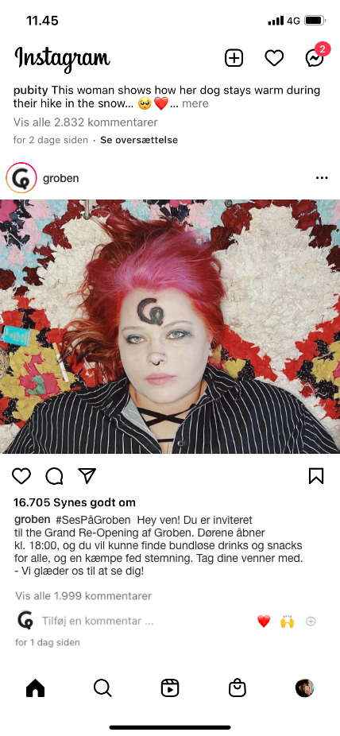
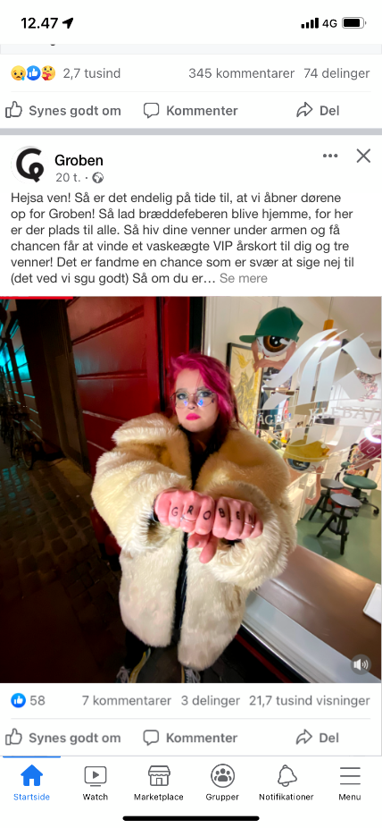
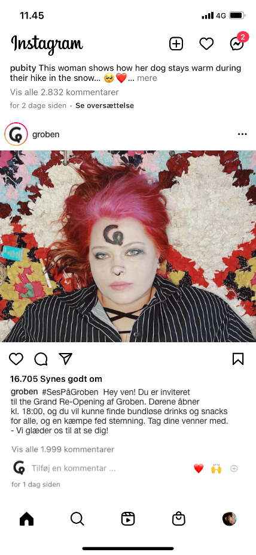
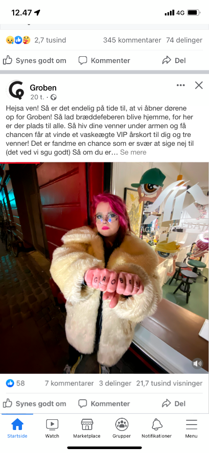

Medlemmer
Isabell Skov Pedersen
Olivia Bothe
Dahlia Rindom
Johanne Balslev
Emma Pasquer
Isabell Skov Pedersen
Olivia Bothe
Dahlia Rindom
Johanne Balslev
Emma Pasquer

Vi har valgt at udarbejde en kampagne som skal er et ordspil med Tatoveringer og Årskort.
At de begge to er en mere permanent løsning på en/t tegning/teater stykke.
Vi har valgt at ændre navnet Grob til Groben, vi synes det kunne blive mere brugt i almindelige samtaler på den måde.
For eksempel : Ses på Groben senere ?
Lidt af et ordspil igen, Groben sagt højt lyder lidt som gruppen.
Det promovere nemlig det sociale og hygge ved teatret.


 


